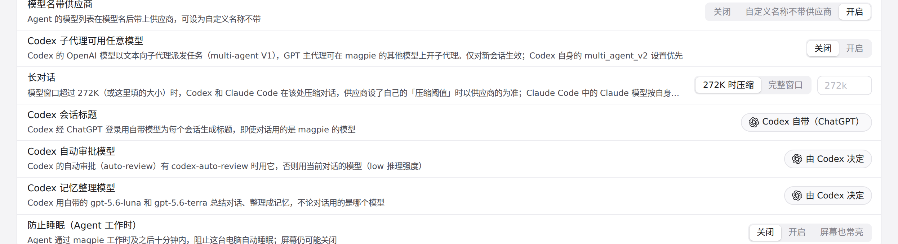
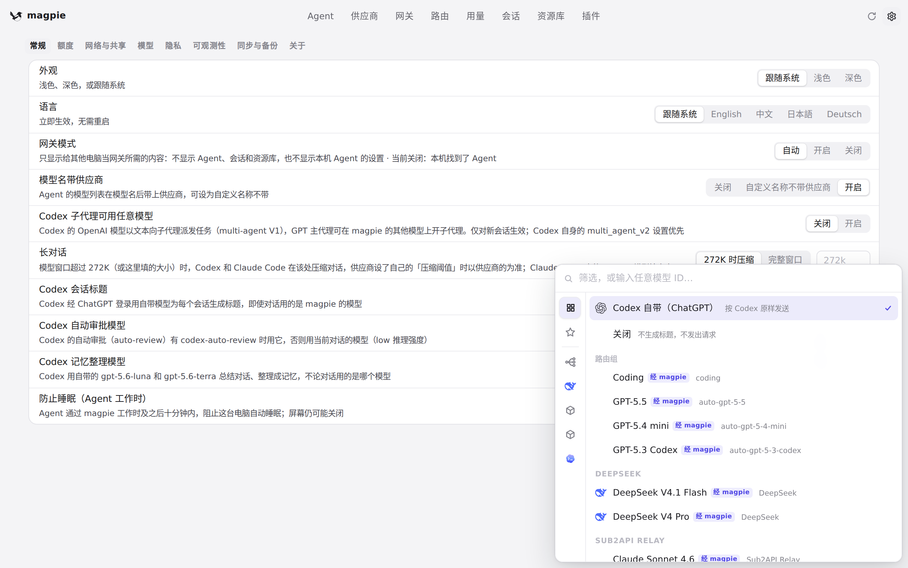
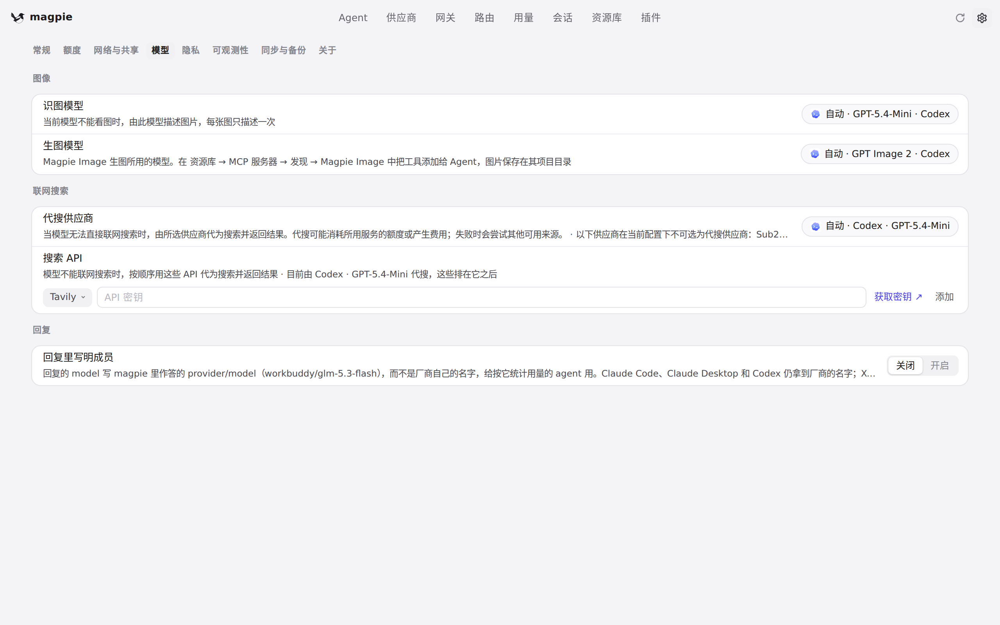

#1073 界面预览
commit 515df08 · 回到 PR · 该 diff 把设置里三处模型选择（Codex 会话标题、图片识别、图片生成）保存时的校验从 provider.Resolve 换成各自选择器列出的清单：选了不在清单里的模型会返回 400 并保留原来的已存值；图片生成的候选清单被抽成 imageGens()，内容与改动前一样。
红线是鼠标走过的轨迹，红色圆环是一次点击；底部文字是这一步在做什么。空格暂停，← → 逐段查看。

设置里的 Codex 会话标题选择 · 设置 · 常规：Codex 会话标题一行

设置里的 Codex 会话标题选择 · 选择器里列出的模型与路由组：保存时就在这份列表里校验

设置 · 模型页的图片相关选择 · 模型页：图片识别与图片生成所用的模型